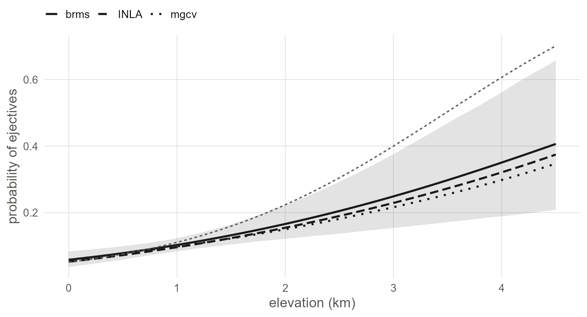
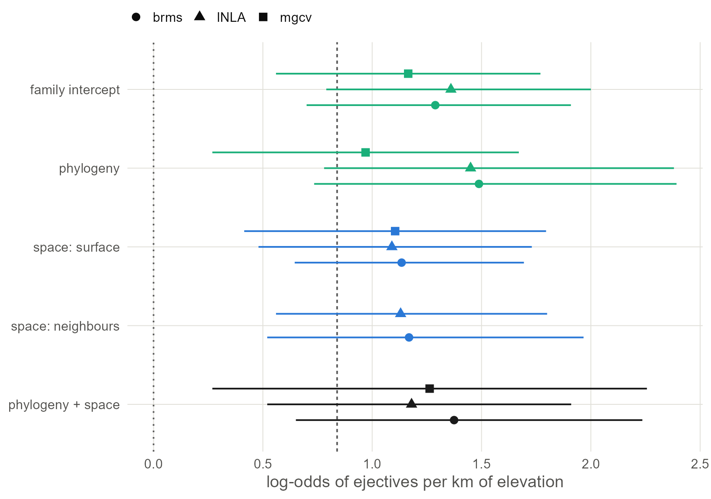

10 Both at once in INLA and mgcv
Fit the joint model in the two fast engines, then lay out the whole book in one figure: every dependence structure, in every engine, with its slope and interval.
10.1 Set up
This chapter needs everything the earlier ones built. Nothing here is new; each block is copied from the chapter named in its comment.
library(ape)
library(INLA)
library(fmesher)
library(mgcv)
library(spdep)
library(sf)
library(ggplot2)
base <- "https://rehan-muh.github.io/tutorials/data/"
d <- read.csv(paste0(base, "languages.csv"))
tree <- read.tree(paste0(base, "glottolog_tree.nwk"))
d$elev_km <- d$elevation / 1000
m0 <- glm(ejectives ~ elev_km, family = binomial, data = d)
# the tree as a matrix and its inverse (phylogeny chapters)
A <- vcv(tree, corr = TRUE)[d$glottocode, d$glottocode]
Q <- solve(A)
dimnames(Q) <- dimnames(A)
# indices and factors for INLA and mgcv
d$fam_id <- as.integer(factor(d$family))
d$phy_id <- seq_len(nrow(d))
d$sp_id <- seq_len(nrow(d))
d$family_f <- factor(d$family)
d$glottocode_f <- factor(d$glottocode, levels = rownames(Q))
# the neighbour graph (space chapters)
coords <- as.matrix(d[, c("lon", "lat")])
W <- nb2mat(make.sym.nb(knn2nb(knearneigh(coords, k = 5, longlat = TRUE))),
style = "B")
# the mesh on the globe and the surface defined on it (space chapters)
to_sphere <- function(lon, lat) {
rad <- pi / 180
cbind(cos(lat * rad) * cos(lon * rad),
cos(lat * rad) * sin(lon * rad),
sin(lat * rad))
}
mesh <- fm_rcdt_2d(globe = 12)
spde <- inla.spde2.pcmatern(mesh, prior.range = c(0.05, 0.05),
prior.sigma = c(3, 0.05))
stack <- inla.stack(
data = list(y = d$ejectives),
A = list(fm_basis(mesh, loc = to_sphere(d$lon, d$lat)), 1),
effects = list(field = seq_len(mesh$n),
data.frame(intercept = 1, elev_km = d$elev_km,
phy_id = d$phy_id)))
# priors and helpers for INLA
pc_sd <- list(prec = list(prior = "pc.prec", param = c(3, 0.05)))
fixed <- list(mean = 0, prec = 1)
slope_of <- function(fit) {
cols <- c("mean", "sd", "0.025quant", "0.975quant")
round(unlist(fit$summary.fixed["elev_km", cols]), 2)
}
sd_of <- function(fit, name) {
m <- inla.tmarginal(function(p) 1 / sqrt(p), fit$marginals.hyperpar[[name]])
z <- inla.zmarginal(m, silent = TRUE)
round(c(mean = z$mean, lower = z$quant0.025, upper = z$quant0.975), 2)
}
classic_of <- function(fit) {
args <- fit$.args
args$inla.mode <- "classic"
do.call(inla, args)
}10.2 The joint model in INLA
Add the phylogenetic generic0 term of Chapter 4 to the SPDE model of Chapter 8. The stack already carries phy_id, so only the formula changes.
i_joint <- inla(y ~ 0 + intercept + elev_km + f(field, model = spde) +
f(phy_id, model = "generic0", Cmatrix = Q, hyper = pc_sd),
family = "binomial", data = inla.stack.data(stack),
control.predictor = list(A = inla.stack.A(stack)),
control.fixed = fixed)
rbind(default = slope_of(i_joint), classic = slope_of(classic_of(i_joint)))## mean sd 0.025quant 0.975quant
## default 1.18 0.35 0.52 1.91
## classic 1.13 0.35 0.48 1.85The two computational modes agree, so the fit can be trusted (Chapter 8 explains the check).
## mean lower upper
## 0.80 0.15 1.98## mean 0.025quant 0.975quant
## Range for field 1.21 0.67 2.00
## Stdev for field 5.13 2.98 8.1310.3 The joint model in mgcv
In a GAM the joint model is two smooths added together: the tree-penalised one and the spline on the sphere.
g_joint <- gam(ejectives ~ elev_km +
s(glottocode_f, bs = "mrf", xt = list(penalty = Q)) +
s(lat, lon, bs = "sos", k = 60),
family = binomial, data = d, method = "REML")
summary(g_joint)$p.table## Estimate Std. Error z value Pr(>|z|)
## (Intercept) -6.75 1.987 -3.40 0.000686
## elev_km 1.26 0.507 2.49 0.012759## edf Ref.df Chi.sq p-value
## s(glottocode_f) 34.7 498 38.1 0.1414
## s(lat,lon) 21.9 59 44.5 0.0257The edf column is the GAM’s version of the credit question of Chapter 9. It says how much of each term’s flexibility the fit ended up using once the other was present.
What this assumes. These standard errors treat the estimated penalties as known, which makes them a little too small.
vcov(g_joint, unconditional = TRUE)returns a covariance matrix corrected for it (Wood et al. 2016).
## elev_km
## 0.5810.4 The joint model, three engines
Bring back the brms fit of Chapter 9. If you ran that chapter the call loads the saved fit; if not, it fits now, which takes several minutes.
library(brms)
options(mc.cores = 4, brms.backend = "cmdstanr")
dir.create("fits", showWarnings = FALSE)
pts <- st_as_sf(d, coords = c("lon", "lat"), crs = 4326)
xy <- st_coordinates(st_transform(pts, "+proj=eqearth")) / 1e6
d$x <- xy[, 1]
d$y <- xy[, 2]
p_b <- prior(normal(0, 1), class = b)
b_joint <- brm(ejectives ~ elev_km + (1 | gr(glottocode, cov = A)) +
gp(x, y, k = 20, c = 5/4),
data = d, data2 = list(A = A), family = bernoulli(),
prior = p_b + prior(exponential(1), class = sd) +
prior(exponential(1), class = sdgp),
control = list(adapt_delta = 0.95),
seed = 1, file = "fits/m_joint")x <- seq(0, 4.5, by = 0.1)
averaged <- function(eta, b) {
at_sea <- eta - b * d$elev_km # every language moved to 0 km
sapply(x, function(xi) mean(plogis(at_sea + b * xi)))
}
draws <- as_draws_df(b_joint)
eta <- posterior_linpred(b_joint)
p <- sapply(x, function(xi) {
b <- draws$b_elev_km
rowMeans(plogis(eta - outer(b, d$elev_km) + b * xi))
})
band <- data.frame(elev_km = x, lo = apply(p, 2, quantile, 0.025),
hi = apply(p, 2, quantile, 0.975))
lines <- rbind(
data.frame(elev_km = x, engine = "brms", p = colMeans(p)),
data.frame(elev_km = x, engine = "INLA",
p = averaged(i_joint$summary.linear.predictor$mean[1:nrow(d)],
i_joint$summary.fixed["elev_km", "mean"])),
data.frame(elev_km = x, engine = "mgcv",
p = averaged(predict(g_joint), coef(g_joint)[["elev_km"]])))
naive <- data.frame(elev_km = x)
naive$p <- predict(m0, newdata = naive, type = "response")
ggplot(lines, aes(elev_km, p)) +
geom_ribbon(data = band, aes(ymin = lo, ymax = hi, y = NULL),
fill = "grey10", alpha = 0.12) +
geom_line(aes(linetype = engine), colour = "grey10", linewidth = 0.9) +
geom_line(data = naive, linetype = "22", colour = "grey35") +
scale_linetype_manual(values = c("solid", "42", "13"), name = NULL) +
labs(x = "elevation (km)", y = "probability of ejectives")
Figure 10.1: The joint model’s regression line from three engines, averaged over the sample: brms with its 95% band, INLA and mgcv as lines. The dashed line is the naive regression. The engines differ in their surface (flat Gaussian process, SPDE on the globe, spline on the sphere) and still draw nearly one line.
10.5 The whole book in one figure
Every dependence structure has now been fitted in every engine that offers it. Collect all of them. The INLA and mgcv models refit here in a minute or two; the brms ones load from fits/.
# INLA: family, phylogeny, neighbours (classic mode), surface
i_fam <- inla(ejectives ~ elev_km + f(fam_id, model = "iid", hyper = pc_sd),
family = "binomial", data = d, control.fixed = fixed)
i_phy <- inla(ejectives ~ elev_km +
f(phy_id, model = "generic0", Cmatrix = Q, hyper = pc_sd),
family = "binomial", data = d, control.fixed = fixed)
i_bym <- inla(ejectives ~ elev_km +
f(sp_id, model = "bym2", graph = W, scale.model = TRUE,
hyper = c(pc_sd, list(phi = list(prior = "pc",
param = c(0.5, 0.5))))),
family = "binomial", data = d, control.fixed = fixed,
inla.mode = "classic")
i_spde <- inla(y ~ 0 + intercept + elev_km + f(field, model = spde),
family = "binomial", data = inla.stack.data(stack),
control.predictor = list(A = inla.stack.A(stack)),
control.fixed = fixed)
# mgcv: family, phylogeny, surface
g_fam <- gam(ejectives ~ elev_km + s(family_f, bs = "re"),
family = binomial, data = d, method = "REML")
g_phy <- gam(ejectives ~ elev_km +
s(glottocode_f, bs = "mrf", xt = list(penalty = Q)),
family = binomial, data = d, method = "REML")
g_sos <- gam(ejectives ~ elev_km + s(lat, lon, bs = "sos", k = 60),
family = binomial, data = d, method = "REML")
# brms: the saved fits of the earlier chapters
dimnames(W) <- list(d$glottocode, d$glottocode)
saved <- function(formula, prior, name, ...) {
brm(formula, data = d, family = bernoulli(), prior = prior, seed = 1,
file = paste0("fits/", name), ...)
}
b_fam <- saved(ejectives ~ elev_km + (1 | family),
p_b + prior(exponential(1), class = sd), "m_fam")
b_phy <- saved(ejectives ~ elev_km + (1 | gr(glottocode, cov = A)),
p_b + prior(exponential(1), class = sd), "m_phy",
data2 = list(A = A))
b_gp <- saved(ejectives ~ elev_km + gp(x, y, k = 20, c = 5/4),
p_b + prior(exponential(1), class = sdgp), "m_gp",
control = list(adapt_delta = 0.95))
b_bym <- saved(ejectives ~ elev_km + car(W, gr = glottocode, type = "bym2"),
p_b + prior(exponential(1), class = sdcar), "m_bym",
data2 = list(W = W))One row per fit: the slope, its error and its 95% interval.
from_brms <- function(fit) unname(fixef(fit)["elev_km", ])
from_inla <- function(fit) unname(slope_of(fit))
from_mgcv <- function(fit) {
b <- summary(fit)$p.table["elev_km", 1:2]
unname(c(b, b[1] - 1.96 * b[2], b[1] + 1.96 * b[2]))
}
entry <- function(structure, engine, v) data.frame(structure, engine, t(v))
grid <- rbind(
entry("family intercept", "brms", from_brms(b_fam)),
entry("family intercept", "INLA", from_inla(i_fam)),
entry("family intercept", "mgcv", from_mgcv(g_fam)),
entry("phylogeny", "brms", from_brms(b_phy)),
entry("phylogeny", "INLA", from_inla(i_phy)),
entry("phylogeny", "mgcv", from_mgcv(g_phy)),
entry("space: surface", "brms", from_brms(b_gp)),
entry("space: surface", "INLA", from_inla(i_spde)),
entry("space: surface", "mgcv", from_mgcv(g_sos)),
entry("space: neighbours", "brms", from_brms(b_bym)),
entry("space: neighbours", "INLA", from_inla(i_bym)),
entry("phylogeny + space", "brms", from_brms(b_joint)),
entry("phylogeny + space", "INLA", from_inla(i_joint)),
entry("phylogeny + space", "mgcv", from_mgcv(g_joint)))
names(grid)[3:6] <- c("slope", "error", "lower", "upper")
grid$ratio <- grid$slope / grid$error
cbind(grid[1:2], round(grid[3:7], 2))## structure engine slope error lower upper ratio
## 1 family intercept brms 1.29 0.31 0.70 1.91 4.15
## 2 family intercept INLA 1.36 0.31 0.79 2.00 4.39
## 3 family intercept mgcv 1.16 0.31 0.56 1.77 3.77
## 4 phylogeny brms 1.49 0.42 0.73 2.39 3.52
## 5 phylogeny INLA 1.45 0.40 0.78 2.38 3.62
## 6 phylogeny mgcv 0.97 0.36 0.27 1.67 2.71
## 7 space: surface brms 1.13 0.27 0.65 1.69 4.27
## 8 space: surface INLA 1.09 0.32 0.48 1.73 3.41
## 9 space: surface mgcv 1.10 0.35 0.41 1.80 3.14
## 10 space: neighbours brms 1.17 0.37 0.52 1.97 3.15
## 11 space: neighbours INLA 1.13 0.32 0.56 1.80 3.53
## 12 phylogeny + space brms 1.37 0.40 0.65 2.24 3.45
## 13 phylogeny + space INLA 1.18 0.35 0.52 1.91 3.37
## 14 phylogeny + space mgcv 1.26 0.51 0.27 2.26 2.49kind_of <- function(structure) {
ifelse(grepl("+", structure, fixed = TRUE), "both",
ifelse(grepl("space", structure), "space", "ancestry"))
}
hues <- c(ancestry = "#1BAF7A", space = "#2A78D6", both = "grey10")
grid$kind <- kind_of(grid$structure)
grid$structure <- factor(grid$structure, levels = rev(unique(grid$structure)))
ggplot(grid, aes(slope, structure, colour = kind, shape = engine)) +
geom_vline(xintercept = 0, linetype = "13", colour = "grey35") +
geom_vline(xintercept = coef(m0)[2], linetype = "22", colour = "grey35") +
geom_linerange(aes(xmin = lower, xmax = upper), linewidth = 0.6,
position = position_dodge(width = 0.6)) +
geom_point(size = 2.6, position = position_dodge(width = 0.6)) +
scale_colour_manual(values = hues, guide = "none") +
scale_shape_manual(values = c(brms = 16, INLA = 17, mgcv = 15), name = NULL) +
labs(x = "log-odds of ejectives per km of elevation", y = NULL)
Figure 10.2: The elevation slope with its 95% interval from fourteen fits: five dependence structures in up to three engines. Green is ancestry, blue is space, black is both. The dashed line is the naive estimate of 0.84, the dotted line is zero. Engines agree within each structure, and every structure moves the estimate the same way.
Read the figure in two directions.
Within a row, the engines agree. Stan’s sampler, INLA’s approximation and mgcv’s penalised likelihood are three different computations, with priors in two of them and none in the third, and they land within each other’s intervals for every structure. Where they differ most, the phylogenetic row, mgcv has no prior holding the lineage variance down and INLA and brms do.
Between rows, the structures agree on the conclusion and differ in detail. Every interval excludes zero, every interval is at least twice as wide as the naive one, and the ratio of slope to error falls from 5.7 in the naive model to between 2.5 and 4.4.
The main result of this book is that how you model the dependence between languages matters much less than whether you model it.
Watch out. The agreement in this figure is agreement among models of one family: a regression with Gaussian latent effects. The phylogenetic logistic regression of Chapter 4, which models the feature’s own history, gave a weaker result, and Chapter 12 shows a situation in which all of these models are wrong together.
10.6 What to carry forward
- The joint model is
f(field, model = spde) + f(id, model = "generic0", Cmatrix = Q)in INLA and two smooths,mrfandsos, in mgcv. - Three engines give one answer for every structure. Fit with the fast ones while you explore and confirm the model you report with brms.
- Build the grid of the same slope across structures and engines as a robustness check. It takes a few minutes.
The last two chapters step back from modelling: first the older alternative, sampling, then a test of everything on data where the truth is known.
10.7 Further reading
How earlier studies combined the two. The first joint controls were two crossed grouping factors, family and area, as random intercepts (Jaeger et al. 2011). That is a joint model in which both structures are as coarse as they can be. The next step kept the same logic with finer structures. Bromham et al. (2018) control for relatedness and proximity together in cross-cultural regressions and show how many published associations do not survive both. Guzmán Naranjo and Becker (2022) combine a phylogenetic term with a Gaussian process in brms, the model of Chapter 9, and compare it with the coarser alternatives on typological data. Dinnage et al. (2020) coin the name spatiophylogenetic model for the INLA version, and Skirgård et al. (2023) apply it to Grambank with two fixed precision matrices, one from a global tree and one from a spatial kernel, and report for each feature how the variance divides between them. The model of this chapter differs from theirs in estimating the spatial range from the data.
- Gelman et al. (2020) and Gabry et al. (2019) describe the checks any of these models should pass before its estimates are read.
- Comparing such models by cross-validation needs care: see Bürkner et al. (2021) for leave-one-out with correlated latent effects and Roberts et al. (2017) for blocked designs.
- On what the slope of a joint model means when the predictor is itself structured, see Hodges and Reich (2010), Hanks et al. (2015) and Dupont et al. (2022).